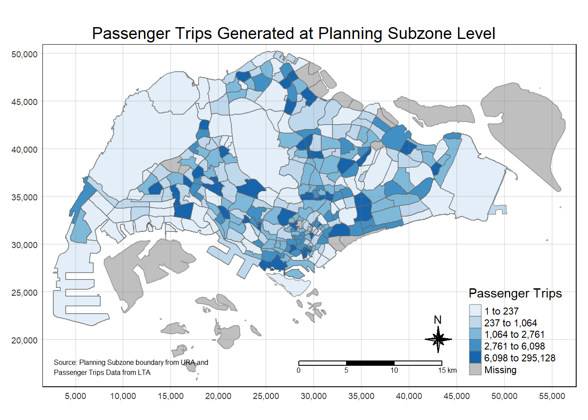

pacman::p_load(tmap, sf, tidyverse)In-Class Exercise 1: My First Date with Geospatial Data Analytics
Lesson 1
1 Task
For this task, we are required to prepare a choropleth map showing the distribution of passenger trips across the planning sub-zones.
2 Getting Started
We will first load the necessary packages using the following code chunk:
- tmap: for thematic mapping
- sf: for geospatial data handling
- tidyverse: for non-spatial data handling
3 Preparing the Aspatial Data
3.1 Importing the Origin Destination (OD) data
We will import the Passenger Volume by Origin Destination Bus Stops data set downloaded from LTA DataMall by using read_csv() of readr package, which is part of tidyverse package.
odbus <- read_csv("data/aspatial/origin_destination_bus_202308.csv")glimpse(odbus)Rows: 5,709,512
Columns: 7
$ YEAR_MONTH <chr> "2023-08", "2023-08", "2023-08", "2023-08", "2023-…
$ DAY_TYPE <chr> "WEEKDAY", "WEEKENDS/HOLIDAY", "WEEKENDS/HOLIDAY",…
$ TIME_PER_HOUR <dbl> 16, 16, 14, 14, 17, 17, 17, 17, 7, 17, 14, 10, 10,…
$ PT_TYPE <chr> "BUS", "BUS", "BUS", "BUS", "BUS", "BUS", "BUS", "…
$ ORIGIN_PT_CODE <chr> "04168", "04168", "80119", "80119", "44069", "4406…
$ DESTINATION_PT_CODE <chr> "10051", "10051", "90079", "90079", "17229", "1722…
$ TOTAL_TRIPS <dbl> 7, 2, 3, 10, 5, 4, 3, 22, 3, 3, 7, 1, 3, 1, 3, 1, …From the above, we see that ORIGIN_PT_CODE and DESTINATION_PT_CODE are character data type. We should convert these two columns from characters into factors because these two columns contains the bus stop numbers and we will need these bus stop numbers to get the bus stop locations in subsequent steps. We will use as.factor() to convert the data from character to factor.
odbus$ORIGIN_PT_CODE <- as.factor(odbus$ORIGIN_PT_CODE)
odbus$DESTINATION_PT_CODE <- as.factor(odbus$DESTINATION_PT_CODE)
Do you know?
In R, factors allow for ordered categories with a fixed set of acceptable values. Typically, we would convert a column from character or numeric class to a factor if we want to set an intrinsic order to the values (“levels”) so they can be displayed non-alphabetically in plots and tables.
If you are interested to read more about factors, this webpage has more interesting information and references.
3.2 Extracting the Study Data
We will extract the study data using filter(), group_by() and summarise() to get our study data (i.e., weekday trips that start from 7am and end before 10am).
origintrip_7_9 <- odbus %>%
filter(DAY_TYPE == "WEEKDAY") %>%
filter(TIME_PER_HOUR >= 7 & TIME_PER_HOUR <= 9) %>%
group_by(ORIGIN_PT_CODE) %>%
summarise(TRIPS = sum(TOTAL_TRIPS))head(origintrip_7_9)# A tibble: 6 × 2
ORIGIN_PT_CODE TRIPS
<fct> <dbl>
1 01012 1617
2 01013 813
3 01019 1620
4 01029 2383
5 01039 2727
6 01059 14154 Preparing the Geospatial Data
4.1 Importing Geospatial Data
We will use st_read() from sf package to read the geospatial data and use st_transform() from sf package to project the data into svy21 using its ESPG code 3414.
busstop <- st_read(dsn = "data/spatial", layer = "BusStop") %>%
st_transform(crs = 3414)Reading layer `BusStop' from data source
`C:\sihuihui\ISSS624\In-class_Ex\In-class_Ex1\data\spatial'
using driver `ESRI Shapefile'
Simple feature collection with 5161 features and 3 fields
Geometry type: POINT
Dimension: XY
Bounding box: xmin: 3970.122 ymin: 26482.1 xmax: 48284.56 ymax: 52983.82
Projected CRS: SVY21From the above, we know that the busstop data is a point feature data frame. There are a total of 5161 features and 3 fields, and it uses the svy21 projected coordinates system.
We will now bring in the master plan subzone dataset using the code chunk below.
mpsz <- st_read(dsn = "data/spatial", layer = "MPSZ-2019") %>%
st_transform(crs = 3414)Reading layer `MPSZ-2019' from data source
`C:\sihuihui\ISSS624\In-class_Ex\In-class_Ex1\data\spatial'
using driver `ESRI Shapefile'
Simple feature collection with 332 features and 6 fields
Geometry type: MULTIPOLYGON
Dimension: XY
Bounding box: xmin: 103.6057 ymin: 1.158699 xmax: 104.0885 ymax: 1.470775
Geodetic CRS: WGS 84From the above, we know that the MPSZ-2019 data is a multipolygon feature data frame. There are a total of 332 features and 6 fields, and it uses the WGS84 geographic coordinates system.
5 Geospatial Data Wrangling
5.1 Combining busstop and mpsz
We will now populate the planning subzone code (SUBZONE_C) of mpsz dataframe (multipolyon feature) into busstop (point feature) dataframe.
busstop_mpsz <- st_intersection(busstop, mpsz) %>%
select(BUS_STOP_N, SUBZONE_C) %>%
st_drop_geometry()head(busstop_mpsz) BUS_STOP_N SUBZONE_C
1346 13099 RVSZ05
5067 13089 RVSZ05
839 06151 SRSZ01
965 13211 SRSZ01
974 13139 SRSZ01
1197 13109 SRSZ01We will save the output into rds format for future use.
write_rds(busstop_mpsz, "data/rds/busstop_mpsz.csv")We will then append the planning subzone code (SUBZONE_C) from busstop_mpsz data frame onto origintrip7_9 dataframe using the following code:
origintrip_7_9_subzone <- left_join(origintrip_7_9,busstop_mpsz,
by = c("ORIGIN_PT_CODE" = "BUS_STOP_N")) %>%
rename(ORIGIN_BS = ORIGIN_PT_CODE,
ORIGIN_SZ = SUBZONE_C)head(origintrip_7_9_subzone)# A tibble: 6 × 3
ORIGIN_BS TRIPS ORIGIN_SZ
<chr> <dbl> <chr>
1 01012 1617 RCSZ10
2 01013 813 RCSZ10
3 01019 1620 DTSZ01
4 01029 2383 DTSZ01
5 01039 2727 DTSZ01
6 01059 1415 DTSZ01 Let us check for duplicate records:
duplicate <- origintrip_7_9_subzone %>%
group_by_all() %>%
filter(n()>1) %>%
ungroup()glimpse(duplicate)Rows: 26
Columns: 3
$ ORIGIN_BS <chr> "11009", "11009", "22501", "22501", "43709", "43709", "47201…
$ TRIPS <dbl> 13826, 13826, 9743, 9743, 1118, 1118, 23998, 23998, 6218, 62…
$ ORIGIN_SZ <chr> "QTSZ01", "QTSZ01", "JWSZ09", "JWSZ09", "BKSZ07", "BKSZ07", …From the above, we know that there are duplicate records. Hence, we will use the following code chunk to retain only the unique records.
origin_data <- unique(origintrip_7_9_subzone)head(origin_data)# A tibble: 6 × 3
ORIGIN_BS TRIPS ORIGIN_SZ
<chr> <dbl> <chr>
1 01012 1617 RCSZ10
2 01013 813 RCSZ10
3 01019 1620 DTSZ01
4 01029 2383 DTSZ01
5 01039 2727 DTSZ01
6 01059 1415 DTSZ01 Let us confirm if there are any duplicate records in the above dataframe:
duplicate2 <- origin_data %>%
group_by_all() %>%
filter(n()>1) %>%
ungroup()glimpse(duplicate2)Rows: 0
Columns: 3
$ ORIGIN_BS <chr>
$ TRIPS <dbl>
$ ORIGIN_SZ <chr> Since there are no rows returned, it means that origin_data has no duplicates and we will now update the origin_data data frame with the planning subzone codes found in mpsz using the following code chunk.
mpsz_origin_data <- left_join(mpsz, origin_data,
by = c("SUBZONE_C" = "ORIGIN_SZ"))head(mpsz_origin_data)Simple feature collection with 6 features and 8 fields
Geometry type: MULTIPOLYGON
Dimension: XY
Bounding box: xmin: 27668.3 ymin: 29212.16 xmax: 33316.59 ymax: 30965.02
Projected CRS: SVY21 / Singapore TM
SUBZONE_N SUBZONE_C PLN_AREA_N PLN_AREA_C REGION_N REGION_C
1 MARINA EAST MESZ01 MARINA EAST ME CENTRAL REGION CR
2 INSTITUTION HILL RVSZ05 RIVER VALLEY RV CENTRAL REGION CR
3 INSTITUTION HILL RVSZ05 RIVER VALLEY RV CENTRAL REGION CR
4 ROBERTSON QUAY SRSZ01 SINGAPORE RIVER SR CENTRAL REGION CR
5 ROBERTSON QUAY SRSZ01 SINGAPORE RIVER SR CENTRAL REGION CR
6 ROBERTSON QUAY SRSZ01 SINGAPORE RIVER SR CENTRAL REGION CR
ORIGIN_BS TRIPS geometry
1 <NA> NA MULTIPOLYGON (((33222.98 29...
2 13089 3241 MULTIPOLYGON (((28481.45 30...
3 13099 3735 MULTIPOLYGON (((28481.45 30...
4 04321 1492 MULTIPOLYGON (((28087.34 30...
5 06129 3031 MULTIPOLYGON (((28087.34 30...
6 06151 1159 MULTIPOLYGON (((28087.34 30...6 Choropleth Visualisation
We will now visualise the distribution of passenger trips on weekdays from 7am till before 10am across the planning subzones using the following code chunk.
tm_shape(mpsz_origin_data)+
tm_fill("TRIPS",
n = 5,
style = "quantile",
palette = "Blues",
title = "Passenger Trips")+
tm_layout(main.title = "Passenger Trips Generated at Planning Subzone Level",
main.title.position = "center",
main.title.size = 1.2,
legend.height = 0.45,
legend.width = 0.35,
frame = TRUE)+
tm_borders(alpha = 0.5)+
tm_compass(type = "8star", size = 2) +
tm_scale_bar()+
tm_grid(alpha = 0.2)+
tm_credits("Source: Planning Subzone boundary from URA and \nPassenger Trips Data from LTA", size = 0.5, position = c("left", "bottom"))